Persistent Storage
Volumes
A volume is a detachable block storage device, similar to a USB hard drive. You can attach a volume to only one instance.
Volumes are the Block Storage devices that you attach to instances to enable persistent storage. Users can attach a volume to a running instance or detach a volume and attach it to another instance at any time.
Ownership of volumes can be transferred to another project.
Some uses for volumes:
- Persistent data storage for ephemeral instances.
- Transfer of data between projects
- Bootable image where disk changes persist
- Mounting the disk of one instance to another for troubleshooting
Navigate to Project -> Volumes -> Volumes.
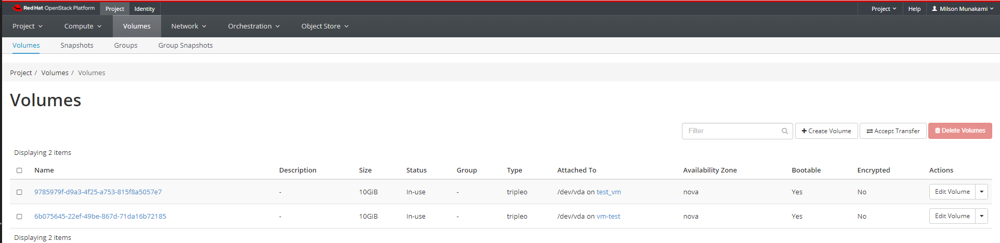
Create an empty volume
An empty volume is like an unformatted USB stick. We'll attach it to an instance, create a filesystem on it, and mount it to the instance.
Click "Create Volume".
In the Create Volume dialog box, give your volume a name. The description field is optional.
Choose "empty volume" from the Source dropdown. This will create a volume that is like an unformatted hard disk. Choose a size (In GiB) for your volume. Leave Type and Availibility Zone as it as. Only admin to the NERC OpenStack will be able to manage volume types.
Click "Create Volume" button.
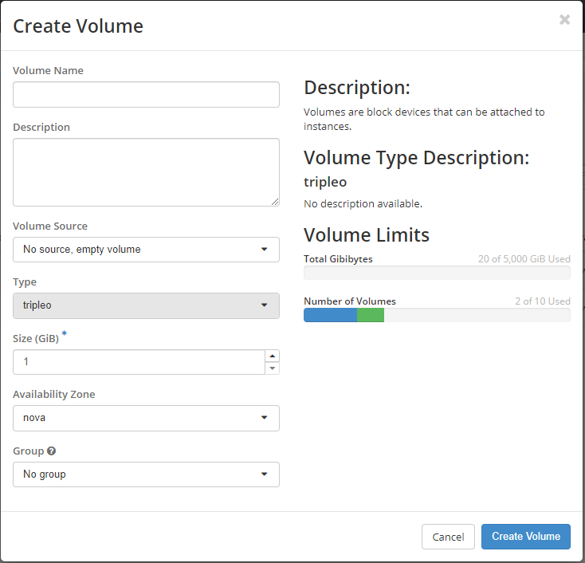
In a few moments, the newly created volume will appear in the Volumes list with the Status "Available".
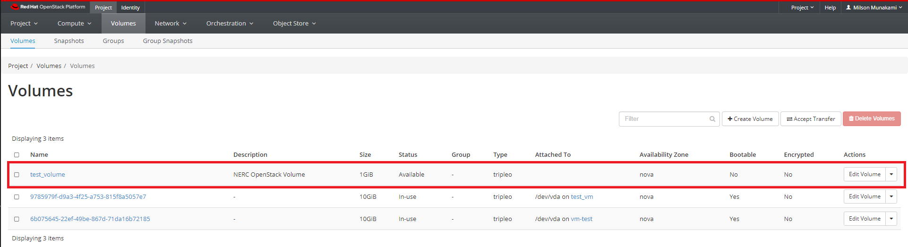
Attach the volume to an instance
In the Actions column, click the dropdown and select "Manage Attachments".
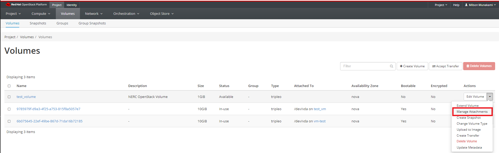
From the menu, choose the instance you want to connect the volume to from Attach to Instance, and click "Attach Volume".
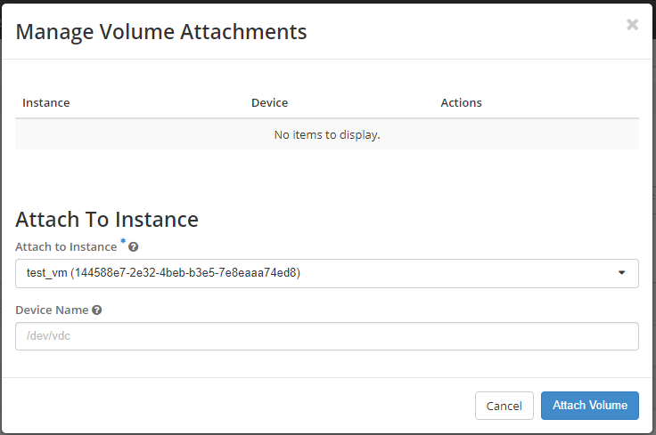
The volume now has a status of "In-use" and "Attached To" column shows which instance it is attached to, and what device name it has.
This will be something like /dev/vdb but it can vary depending on the state
of your instance, and whether you have attached volumes before.
Make note of the device name of your volume.
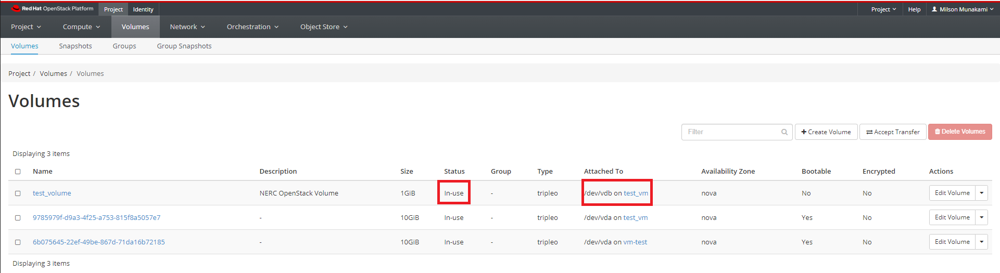
Format and mount the volume
SSH to your instance. You should now see the volume as an additional disk in
the output of sudo fdisk -l or lsblk.
# lsblk
NAME MAJ:MIN RM SIZE RO TYPE MOUNTPOINT
...
vda 254:0 0 10G 0 disk
├─vda1 254:1 0 9.9G 0 part /
├─vda14 254:14 0 4M 0 part
└─vda15 254:15 0 106M 0 part /boot/efi
vdb 254:16 0 1G 0 disk
We see the volume here as the disk 'vdb', which matches the /dev/vdb/ we
noted in "Attached To" column.
Create a filesystem on the volume and mount it - in the example we create an
ext4 filesystem:
Run the following commands as root user:
# mkfs.ext4 /dev/vdb
# mkdir /mnt/test_volume
# mount /dev/vdb /mnt/test_volume
The volume is now available at the mount point:
# lsblk
NAME MAJ:MIN RM SIZE RO TYPE MOUNTPOINT
...
vda 254:0 0 10G 0 disk
├─vda1 254:1 0 9.9G 0 part /
├─vda14 254:14 0 4M 0 part
└─vda15 254:15 0 106M 0 part /boot/efi
vdb 254:16 0 1G 0 disk /mnt/test_volume
If you place data in the directory /mnt/test_volume, detach the volume, and
mount it to another instance, the second instance will have access to the data.
Important Note
In this case it's easy to spot because there is only one additional disk attached to the instance, but it's important to keep track of the device name, especially if you have multiple volumes attached.
Detach a volume
To detach a mounted volume by going back to "Manage Attachments" and choosing Detach Volume.
This will popup the following interface to proceed:
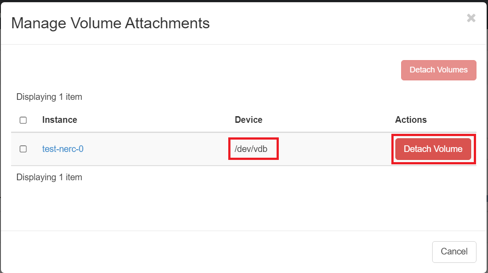
Attach an existing volume to an instance
Once it is successfully detached, you can use "Manage Attachments" to attach it to another instance if desired as explaned before.
OR,
You can attach the existing volume (Detached!) to the new instance as shown below:
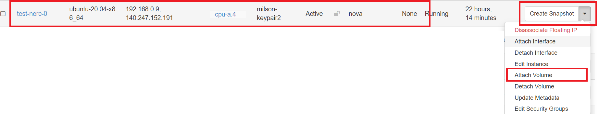
After this run the following commands as root user to mount it:
# mkdir /mnt/test_volume
# mount /dev/vdb /mnt/test_volume
All the previous data from previous instance will be available under the mounted
folder at /mnt/test_volume.
Very Important Note
Also, a given volume might not get the same device name the second time you attach it to an instance.
Delete volumes
When you delete an instance, the data of its attached volumes is not destroyed.
Navigate to Project -> Volumes -> Volumes.
Select the volume or volumes that you want to delete.
Click "Delete Volumes" button.
In the Confirm Delete Volumes window, click the Delete Volumes button to confirm the action.
Create Volume from Image
You can create a volume from an existing image. If the image is bootable, you can use the volume to launch an instance.
Click "Create Volume".
This time, in the Create Volume dialog box, for Volume Source, choose 'Image'. From the 'Use Image as a Source' dropdown, choose the image you'd like to use.
To use this volume to launch an instance, you can choose Boot From Volume in the Instance "Select Boot Source" dropdown when creating an instance, then select your volume from the Volumes list.
Make sure 'Delete Volume on Instance Delete' is selected "No" if you want the volume to persist even after the instance is terminated.
Note
Only one instance at a time can be booted from a given volume.
Transfer a Volume
You may wish to transfer a volume to a different project.
Important
The volume to be transferred must not be attached to an instance. This can be examined by looking into "Status" column of the volume i.e. it need to be "Available" instead of "In-use" and "Attached To" column need to be empty.
Navigate to Project -> Volumes -> Volumes. Select the volume that you want to transfer and then click the dropdown next to the "Edit volume" and choose "Create Transfer".
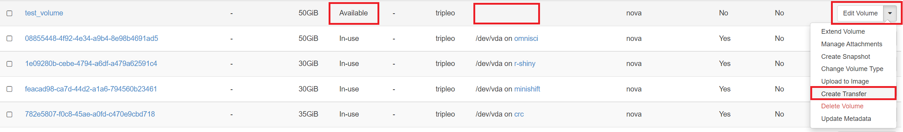
Give the transfer a name.
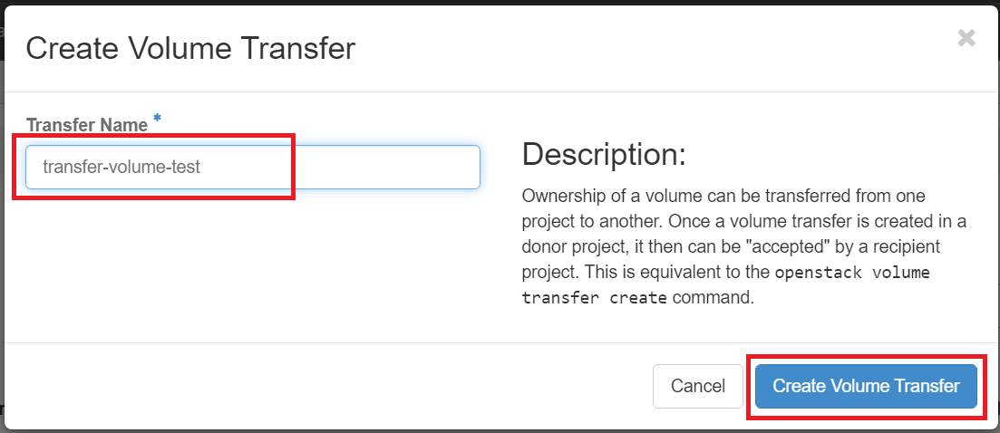
You will see a screen like shown below. Be sure to capture the Transfer ID and the Authorization Key.

Important Note
You can always get the transfer ID later if needed, but there is no way to retrieve the key. If the key is lost before the transfer is completed, you will have to cancel the pending transfer and create a new one.
Then the volume will show the status like below:
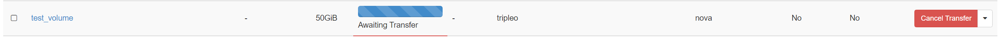
Assuming you have access to the receiving project, switch to it using the Project dropdown at the top right.
If you don't have access to the receiving project, give the transfer ID and Authorization Key to a collaborator who does, and have them complete the next steps.
In the receiving project, go to the Volumes tab, and click "Accept Transfer" button as shown below:
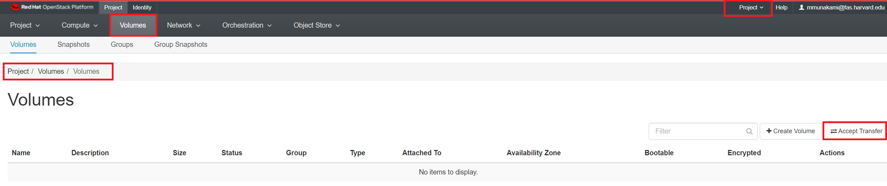
Enter the "Transfer ID" and the "Authorization Key" that were captured when the transfer was created in the previous project.
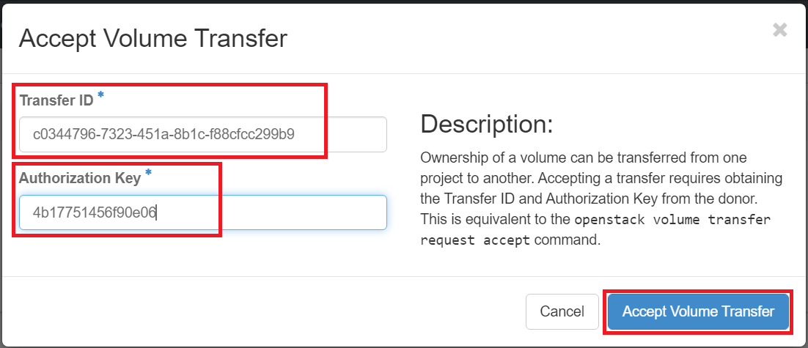
The volume should now appear in the Volumes list of the receiving project as shown below:

Important Note
Any pending transfers can be cancelled if they are not yet accepted, but there is no way to "undo" a transfer once it is complete. To send the volume back to the original project, a new transfer would be required.